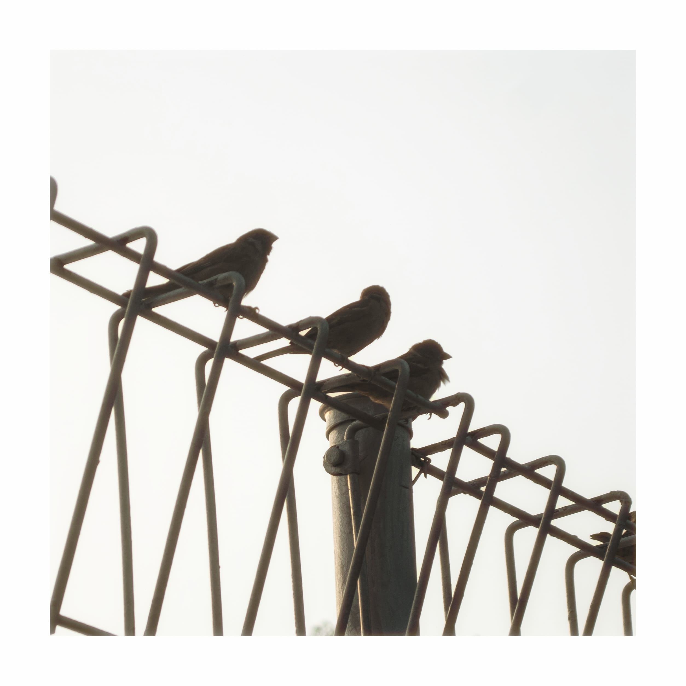

Selected Works

Bara di Ujung Ranting
Detail sayap dan warna dramatis capung merah yang hinggap tenang di antara dedaunan.

Dinamika Lapangan
Momen perebutan bola yang menangkap intensitas, ketegangan, dan semangat olahraga.

Tarian Keemasan
Gerakan dinamis koi emas yang menciptakan kontras elegan dan ketenangan di air gelap.

Penerbang Harapan
Benih liar bersiap tertiup angin—simbol perjalanan baru dan keindahan mikro yang estetik.

Kamuflase Sunyi
Kupu-kupu cokelat yang menyatu sempurna dengan habitat alaminya di atas kayu berlumut.
Kolaborasi Tanpa Batas
Potret makro kolaborasi semut rangrang dalam mempertahankan koloni dan teritorinya.

Tatapan Zamrud
Sorot mata hijau tajam yang memancarkan aura misterius dan karakter kuat sang pemangsa.

Petunjuk dalam Sunyi
Siluet rambu taman yang diubah menjadi karya fotografi ruang publik yang artistik.

Selingan di Atas Besi
Burung gereja berjejer membentuk komposisi geometris dengan nuansa estetik minimalis.

Ketenangan Sungai
Ketenangan alam yang tak cukup sekadar diceritakan, namun harus dirasakan langsung.